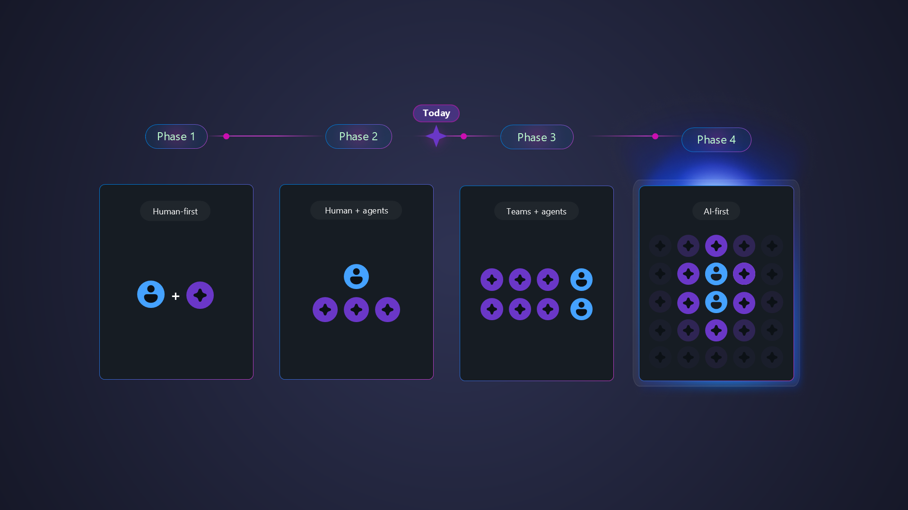
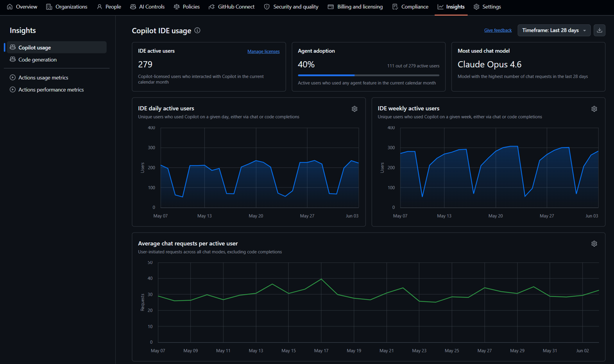
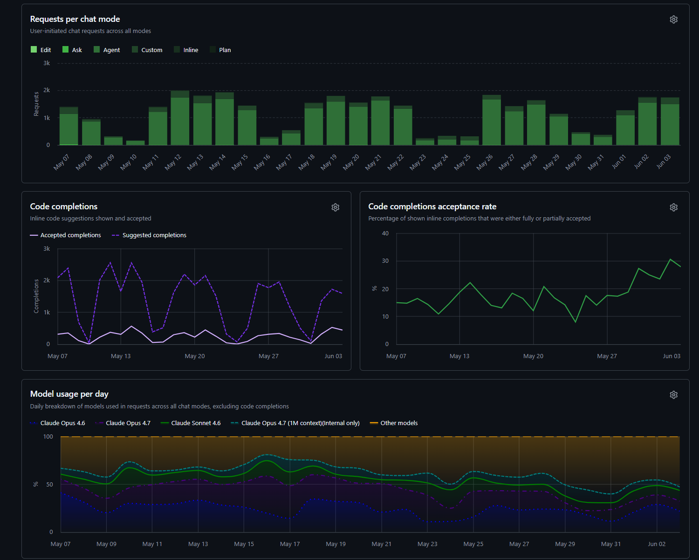
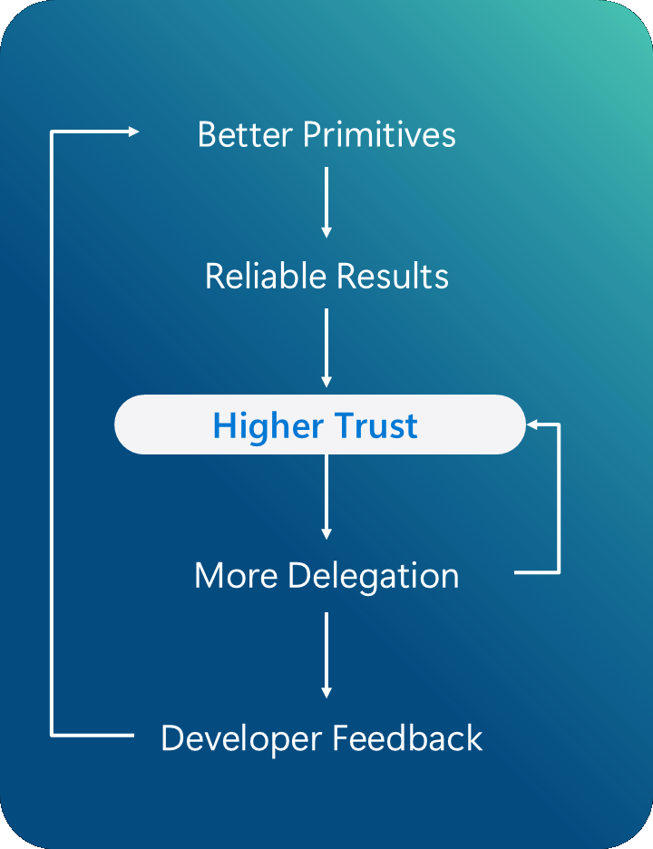
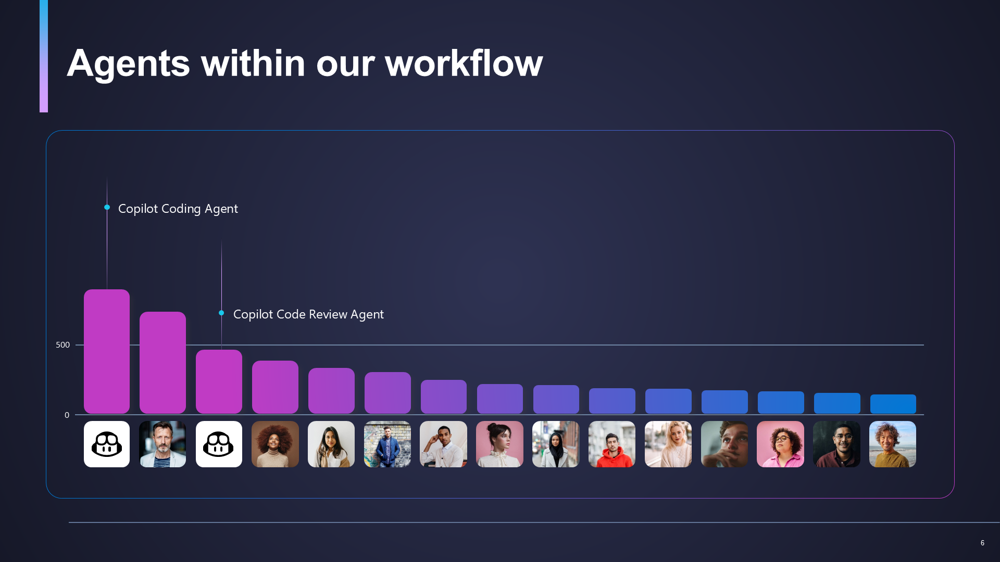
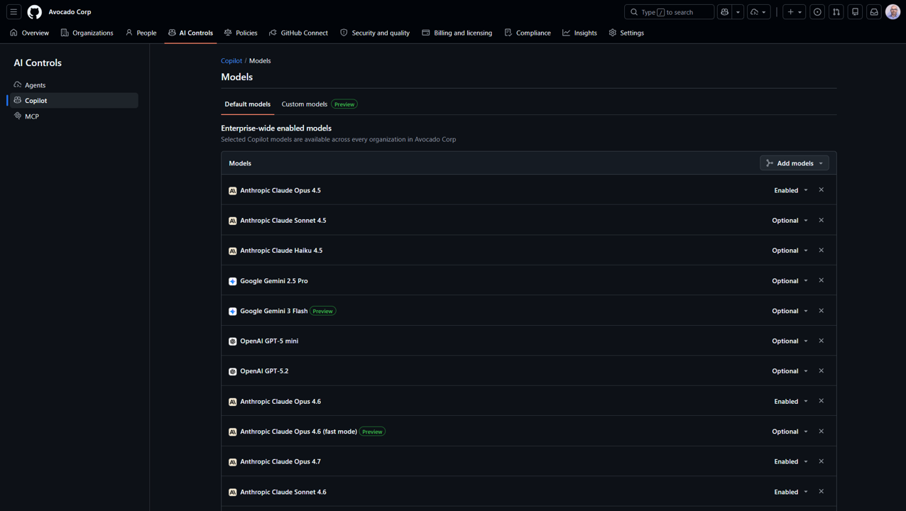

Repeatable patterns · context engineering · practical workflows

Utilization metrics give visibility into usage — pair them with outcome KPIs to measure real impact.


Developers are enabled to do their best work and experience satisfaction.
Ship secure, reliable, and easily maintainable code.
Ship regularly and at a pace that can help you meet business needs.
"Find and fix the bug, NOW!"
(after 3 chat turns that broke production)
Trust compounds. Delegation accelerates.
The more you use it, the better it gets.

Agents within our workflow

A rigorous framework for Spec Driven Development.
A methodology for producing deterministic, reviewable output from AI agents.
Create explicit implementation pipelines / workflows
Break the task into discrete, scoped steps. Define acceptance criteria before writing code.
Create spec files that capture context, constraints, and expected interfaces for each component.
Hand the spec to the agent — it generates code that meets your defined contract.
Review, test, iterate. Feed results back to improve specs for the next cycle.
GitHub Copilot supports multiple models — choose the right one for cost, speed, and quality trade-offs.
Model reference ↗Working within existing codebases — navigating legacy patterns, established conventions, and existing architecture. Context engineering is critical here.
Starting from scratch — scaffolding new projects, defining architecture, and establishing patterns. Spec-driven development shines here.
A centralized registry for discovering, sharing, and installing pre-built agent configurations — instructions, prompts, agent definitions, and skills.
Think npm for agent primitives — install proven patterns from the community instead of writing them from scratch. Enables teams to standardize and distribute best practices across projects.
When tokens are cheap, agent accuracy is not important. Once they are not, they require engineering work.
Add description.
"Stop if X."
Files, Folders, Websites, etc.
These Tips require good knowledge and time-invest, as they are conditional and / or come with trade-offs.
Prefer creating scripts to analyze files over feeding it to AI.
CLI Tools can be more optimal in certain scenarios due to less static tokens.
Shell outputs can be extremely long – use something like https://github.com/rtk-ai/rtk to reduce their outputs.
Analyze your usage in Copilot CLI to find improvement areas.
Using something like copilot-codeact-plugin can help collapse multiple tool calls into one.
Models behave different and can be tweaked.
Chose the right model for the right task.
Provide clear guidance in your prompts.
Research – Plan – Implement.
Provide deterministic guardrails (tests, linters, security scans etc.).
Maintain a concise, human-written copilot-instructions.md. Use it as agent-miss log & to trim outputs.
Practical steps for managing token costs and enforcing governance across your teams.
Cost governance guide ↗
Open discussion